A comprehensive study of Mixed Integer Programming with JuMP on Julia (Part 2)
Modelling concepts with an application to the Lot sizing problem
This post is the continuation of this one; I encourage you to read the first post, especially if you don’t have any background in Mixed Integer Programming. If you did so: Welcome to serious business.
This post's goal is to show how linear terms can model widespread constraints and optimise handy functions for real-life problems.
In today's menu, we will investigate the following questions :
- How can we model logical constraints in a Linear Program?
- Are all the formulations of the same problem equivalent? And if not, how can we say that a formulation is better than another?
- Can we have an ideal formulation for a combinatorial problem?
Of course, we will try to do it while solving a classical industrial problem: The Lot Sizing Problem.
The Lot Sizing Problem
The Lot Sizing-Problem (LSP) consists of planning the lot sizes to produce and stock over a planning horizon to minimise production, setup and inventory holding costs.
In other terms, imagine you have to set the production planning of a factory to meet customer’s demands at every time step. Still, each time you launch the production, you have to pay an ongoing setup cost and a production cost that depends on the quantity you want to produce.
You can think of producing all the quantity you can at the beginning of the period, but storing also involves cost.
We will also consider a capacity constraint that will limit how much we can hold, so we’ll be tackling the Capacitated Lot Sizing problem.
Instance Description
Let’s start by looking at how we can model an instance of this problem. First of all, we must keep in mind that the resolution is made on a time horizon, so every “time dependant” variable will be indexed by t ≤ T.
Now, what are the instance-dependant variables that are constant over time? First of all, costs. So we recognize f as the setup cost, q as the production cost per unit, and as the holding cost k, storage capacity is also invariant.
Client demands will be described by a vector of our time horizon size; each demand will be represented by dₜ with t an instant of our time horizon.
In the following, we will consider the following instance:
T=10 #Time Horizonf=1000 #Setup Costq=30 #Production Costk=10 #Holding CostD=[15,10,10,25,30,5,5,50,20,80] #Demand at each stepImax=100 #Storage Capacity
Model variables
We have two possible actions: produce for now or produce and store for later.
Then, at each time step, we have to decide whether to launch the production or not, and if we launch it, we have to determine how much we produce; our choice will affect the state of the stock, so we also have to use a variable for it.
These decisions have to be made at each time step, so we’ll have yₜ, pₜ and Iₜ to representif we launch, how much we produce and how much we have in the storage at the end of each time step.
The variables can be instantiated this way :
@variable(prgrm, p[1:T] >= 0)@variable(prgrm,I[0:T]>= 0) #We index from 0 to set an initial storage@variable(prgrm, 1 >= y[1:T] >= 0, Int)
Model constraints
One principal constraint is to produce without exceeding the storage capacity at each step; this can be formulated like this :
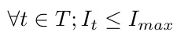
After that, we must keep in mind that any product is either for now or later, so each time we produce, everything we produce above the client’s demand is kept in storage for the next steps; this is a “flow constraint” and can be written as follows :

#We set initial storage to 0 (for example)@constraint(prgrm, I[0] == 0)for i in 1:T@constraint(prgrm,I[i-1] + p[i] == D[i] + I[i])end
There is another intrinsic constraint: if we want to produce, we must launch production; this is an implication constraint (pₜ > 0 impliesthat yₜ = 1) and an excellent occasion to present a Big-M and how we can use it to model an implication.
A big-M of a variable is a value that the variable cannot reach, and it helps to formulate a constraint as follows:
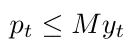
If you look closely at this constraint, you will notice that pₜ cannot be nonnull unless yₜ is true, and if yₜ is true, the production is not limited by this constraint since M is a value greater than the maximum reachable value of pₜ.
Of course, now the question is: how can we fix the Big-M?
We can arbitrarily fix it to an unreasonably high value like 10⁵, but it’s not recommended for two reasons :
- It can raise issues numerically because inside a solver, a false boolean, for example, is represented as a very close value to 0. By that, I mean smaller than 10⁻⁵, so if you take 10⁸ as a big M, it may lead you to a result where y is set to 10⁻⁶, and the solver sees it as a boolean false. Still, it’s not constraining pₜ to be null as it’s supposed to do.
- It affects the relaxation gap negatively; we will get back to this point later, but the intuition is that it’s restraining the area where we have to search, so between adding a constraint p≤ 2 and a constraint p ≤10⁶, the first one is more restrictive.
In general, we seek the smallest variable to use as a Big-M; for this example, we can have many different choices :
- Since we can’t produce more than what we can store, the big-M can be fixed to Iₘₐₓ.
- We are never interested in producing more than the client’s total demands; we can take the sum of the demands as a Big-M for all our production variables.
- Nothing is obliging us to take the same big-M for all the pₜ variables; By applying the same reasoning as in the precedent point, we are never interested in producing more than the remaining demand.
The second idea is contained in the third one, but we are not obliged to choose between the first idea and the third one we can put :
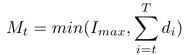
Notice that Mₜ is not a variable since we know Iₘₐₓ and all the dᵢ. Then we can compute every Mₜ while building our program; another positive side effect of this big-M is that we no more need to specify the constraints related to the fact that we can’t produce more than what we can store.
Objective function
To design the objective function, we must have a way to evaluate the quality of a solution; for this problem, it’s pretty straightforward we have to minimize the total cost, which we can calculate like this:
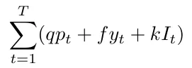
To obtain this cost, we will use two convenient functionalities of Julia; the first one is the element-wise operations which well help us multiply a vector with a coefficient :
p .\* 10#Output : an array of size {T}
And the second is the sum operator :
sum(p .\* 10)#Output: 10𝑝1+10𝑝2+10𝑝3+10𝑝4+10𝑝5+10𝑝6+10𝑝7+10𝑝8+10𝑝9+10𝑝10
And so we could get the objective function like this:
@objective(prgrm, Min, sum(p .\* q) + sum(y .\* f) + sum(I .\* k))
And the solution we obtain is the following:
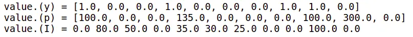
A more general instances
For the sake of generalization, let’s suppose this time that the production costs and the holding costs are variable among time, so let’s consider this instance :
T = 10f = 1000q = [5, 10, 10, 5, 8, 2, 7, 8, 9, 10]k = [0, 10, 5, 5, 10, 5, 8, 2, 2, 2, 8]D = [80,30,50,100,5,5,25,100,200,100]Imax = 200
Notice that it doesn't change anything in the program thanks to the element-wise product that is still valid in the objective function, so you should obtain the following allocation :
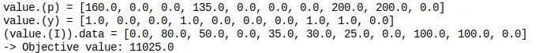
Reducing the number of used variables
If we think of it, the stock depends on the production directly; actually, for an instant t, it’s the quantity we produced until t minus the sum of the demands until t so that we can replace Iₜ in the constraints.
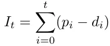
And thus obtain:
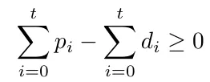
This means that the production has to cover the demand at each step at least.
Then the stock variables are useful in formulating the holding costs, but we can easily bypass this provided that we put cₜ a cost which involves the production cost and the holding cost.
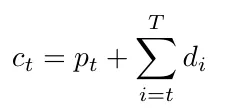
So we obtain the following cost for each unit produced at a moment t.
The program can be instantiated as follows.
prgrm = Model()set\_optimizer(prgrm, GLPK.Optimizer)@variable(prgrm, p[1:T] >= 0)@variable(prgrm, 1 >= y[1:T] >= 0, Int)@variable(prgrm, I[0:T] >= 0) #We index from 0 to set an initial storagefor i in 1:T@constraint(prgrm,sum(p[1:i]) - sum(D[1:i]) >= 0)endfor i in 1:T@constraint(prgrm, sum(p[1:i]) - sum(D[1:i]) <= Imax)endfor i in 1:TM = min(sum(D[i:end]), Imax)@constraint(prgrm, p[i] <= M\*y[i])endc = []for t in 1:Te = q[t] + sum(k[t+1:end])append!(c,e)end@objective(prgrm, Min, sum(p .\* c) + sum(y .\* f))prgrm
And we obtain the following solution :
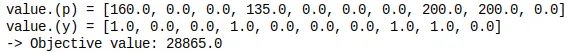
This is quite strange; we have obtained the same solution in term of decision variables but with a different objective value.
In fact, I did it on purpose to explain two things,
The first one is that when defining the cost of production at a time step, we forgot to subtract the holding cost of what will go to meet client demand which represents
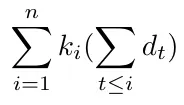
The second one is that this has no importance on the decision variables because, in general, optimizing f or optimizing f + a is the same thing since a doesn't depend on our decision (nor on anything else since it’s a constant).
Although if we had to subtract it to check, we could verify that
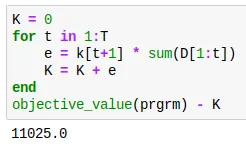
Extended formulation
In the formulation here above, the production is decided whether it’s for now or later with a single aggregated variable.
Let’s see another formulation where we will think differently by separating the production at each time step to many variables wᵢₜ; each represents the production on I intended to satisfy the client demand on t.
Then satisfying the demand at each time step can be naturally expressed as :
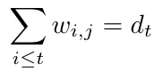
The setup constraints become
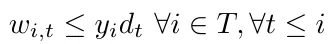
Notice that I didn’t take the bound with Iₘₐₓ because it’s trivial that the demand at a special time step is less than Iₘₐₓ (we have to store it somewhere before delivering it even if it’s the same day).
And we can write the capacity constraints as :
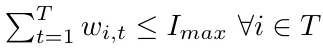
This piece of code can create the full program:
prgrm = Model()set\_optimizer(prgrm, GLPK.Optimizer)@variable(prgrm, w[1:T , 1:T] >= 0)@variable(prgrm, 1 >= y[1:T] >= 0, Int)for t in 1:Tfor i in 1:t-1@constraint(prgrm, w[t,i] == 0)endendfor t in 1:T@constraint(prgrm,sum(w[1:t, t]) == D[t])endfor t in 1:T@constraint(prgrm, sum(w[t,:]) <= Imax)endfor t in 1:Tfor i in 1:t@constraint(prgrm, w[i,t] <= y[i]\*D[t])endendc = []for t in 1:Te = q[t] + sum(k[t+1:end])append!(c,e)ende = 0for i in 1:Te = e + c[i]\*sum(w[i,i:end])end@objective(prgrm, Min, e + sum(y .\* f))prgrm
This gives us the following result:
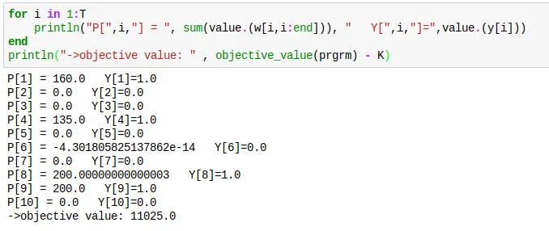
We, of course, obtain the same result, and we also notice that, as I explained sooner, a null value is, in fact, a tiny value as for p₆.
Formulations comparison
Now I’m going to present some insights you should have about MIP formulations for combinatorial problems and use them after to compare the different formulations I presented sooner.
The size matters
Like most algorithms, the simplex algorithm's efficiency depends on the size of its inputs.
In general, we talk about columns and rows to refer to the program's final number of variables and constraints.
Why don’t we directly use the terms variables and constraints? For two reasons,
The first is that we can always write a Linear program in a matrix form like the following.
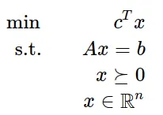
So, for example, the following matrixes.
A= [ 1 1 9 5;3 5 0 8;2 0 6 13]b = [7; 3; 5]c = [1; 3; 5; 2]
Would give this program
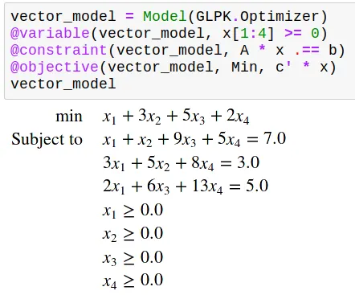
And thus, the number of variables (resp constraints) is the number of columns (resp rows) of matrix A.
And the second is that the number of rows and columns may differ from the number of decision variables and problem constraints in the formal model, as you will see in the following.
This will also give me an excellent occasion to present some Linearization techniques.
Actually, you already have seen a linearization technique; previously, we linearized the logical implication, but as it’s not the only logical operator you can be interested in, here is a table that recapitulates the linear equivalents of the main logical operators supposing x,y,z are boolean variables.
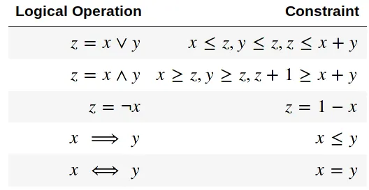
Another operator I often linearize is the minimum (or maximum) operator. To use the minimum between x and y in a program, you can do like this:
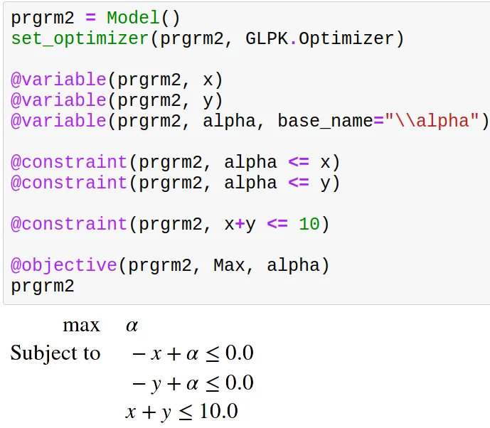
(And in case you are wondering, yes, we can use Latex symbols in any Julia string)
This, for example, is a program where we have 2 decision variables and 1 constraint but 3 columns and 3 rows.
Another question you may have is, “What use could I have for a minimum in a program?”,
The uses are varied, but the simplest I can give you is a preview of another article I’m thinking of writing on multi-objective optimization.
Imagine, for example, that we have 10$ to share between two brothers.
Say that x and y are the variables that designate how much we give to each brother.
You will have the same situation as above, but what objective function should you consider?
Of course, we want to maximize the given money, so we want to maximize x+y, but we intuitively also want to be fair to each brother, and a way to do so is to maximize the minimum of what each brother gets.
This gives us the following.

The last linearization I will present is the one of the product.
You are reading well; if we have two boolean variables, we can linearize their quadratic combination as follows.
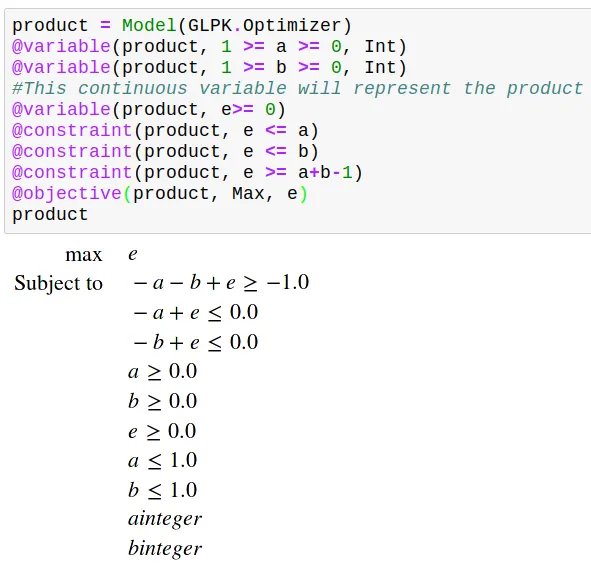
All this to say, you can use linearization techniques to express non-linear operators. Still, it would help if you kept in mind that doing so involves a cost on efficiency by increasing rows and/or columns.
The tighter, the better
As you may remember from the first part of this series, a constraint is a restriction to the half-space above or below a line, so when formulating our program, we are enumerating the lines That limit our search area.
Consider for the sake of visualization a combinatorial problem where the feasible solutions are in green.
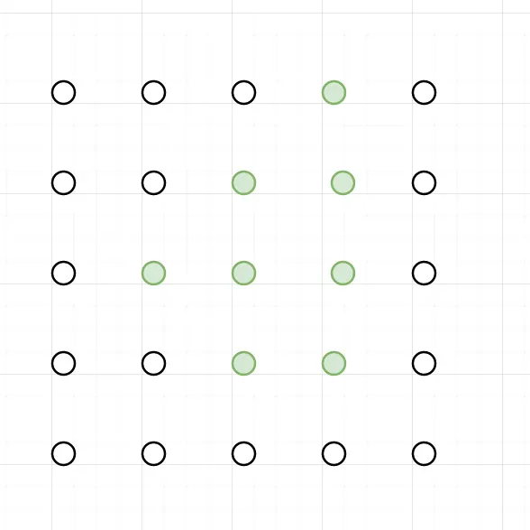
A formulation we can think of may split the space according to the dotted lines.
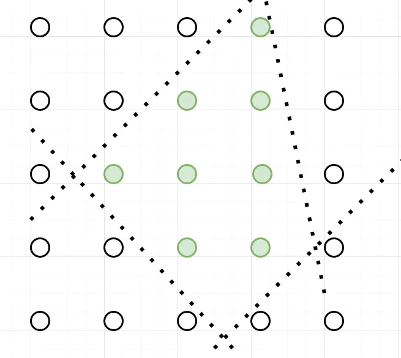
But we could also imagine many other formulations that involve other lines (constraints) and surround the green points,
The best one we could find would ideally fit perfectly to the polyhedron formed by the green points like the solid line.
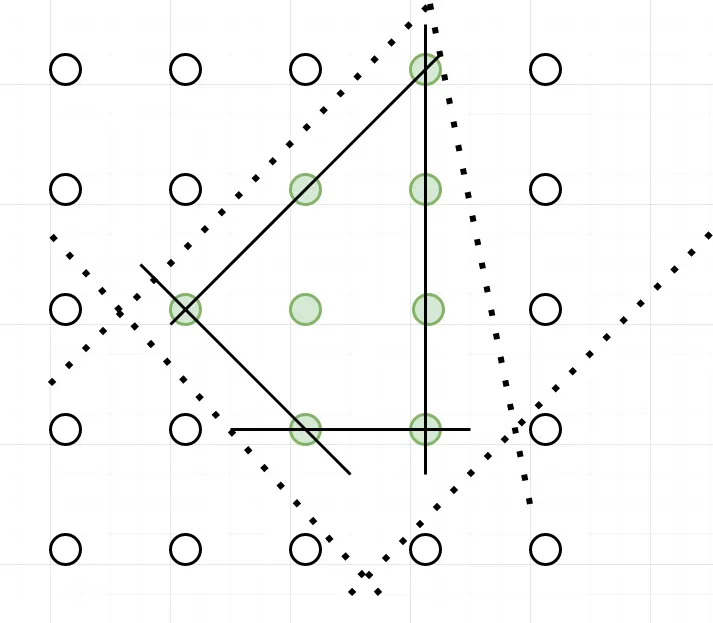
Why would it be the best? Because all its vertices are integral solutions, we say that it perfectly describes the feasible solution’s polyhedron.
But a perfect formulation is, for many problems, difficult to find.
Can we recognize a perfect formulation?
As I said before, a linear program's constraints can be written as a matrix A; thus, we have this theorem of Hoffman-Kruskal.
If A is a totally unimodular matrix then every vertice of the constraints polyhedron it defines is integral.
But what is a totally unimodular matrix? The definition is pretty complex and requires some linear algebra background. Still, I will give here, as a matter of fact, the definition of a unimodular matrix and then the definition of a totally unimodular matrix.
Unimodular Matrix:
A matrix is unimodular if it’s a square matrix with a determinant of 1 or -1.
If A is a matrix of integers, then we have this theorem of Veinett-Dantzig:
x = A⁻¹b is an integer vector for every vector b of integers if and only if A is unimodular.
Totally Unimodular Matrix
A totally unimodular matrix is a matrix (not necessarily square) for which every square non-singular submatrix is unimodular.
Formulated like this, it doesn't seem very easy to recognize a totally unimodular matrix, but Poincaré pointed out a special case of totally unimodular matrixes.
If the matrix's coefficients are either 1, 0 or -1 and in each column, we have less than 1 time the coefficient 1 and less than 1 time the coefficient -1; then the matrix is totally unimodular.
Another more general property exists:
The matrix coefficients are either 1,0 or -1, each column has less than 2 nonnull coefficients, and the lines can be split into two subsets I₁ and I₂ such that if two columns have a coefficient with the same sign, they should belong to different subsets and vice versa.
Example of perfect formulation
A well-known example of a natural formulation that perfectly describes the polyhedron of feasible solutions is the formulation of the minimum-cost flow problem; it’s valid for the general case, but the uncapacitated one is easier to prove because it’s a direct application of the Pointcaré theorem.
The problem consists of finding a flow through the edges from a source s to a destination t by minimizing the cost of the taken edges.
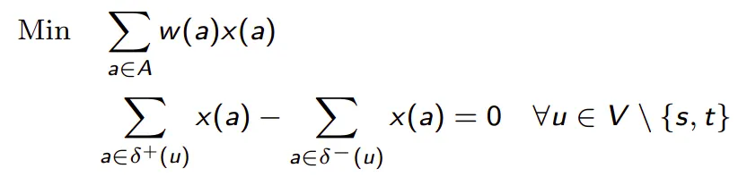
As each edge appears in two constraints (one for each of its endpoints), once with the coefficient -1 and once with the coefficient 1, the matrix is totally unimodular, and thus the formulation is perfect.
Getting back to our problem
Now that we have some background on comparing different formulations of the same problem let’s compare the extended formulation with the aggregated one of the capacitated lot-sizing problem.
According to the number of variables
The extended formulation has T² continuous variables. The aggregated one has only T continuous variables, so it’s asymptotically more important, i.e. the difference in the number of variables between the two formulations keeps growing as we elongate the time interval.
Still, as the variables are continuous, it’s not a big drawback.
On the other hand, they have a similar number of continuous variables and constraints.
According to the tightness of the formulation
The extended formulation is tighter than the aggregated one because if we check the setup constraints, we can notice that :
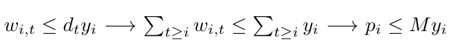
This says that if a solution satisfies the setup constraint of the aggregated formulation, it will satisfy the extended formulation's setup constraint; then, the setup constraint in the extended formulation is more restrictive.
So the constraints defined by the setup constraints of the aggregated formulation define a polyhedron that is contained into the polyhedron defined by the extended formulation ones. Thus, the extended formulation is tighter.
Which formulation is the better?
In my opinion, the extended one, because an augmentation in the number of continuous variables is not a high cost for strengthening the formulation.
This intuition is reinforced by the fact that, for the uncapacitated case, the extended formulation is proven to be an ideal formulation.
Conclusion
MIP offer an extensive panel of modelisation tools that can linearize almost everything. This brief overview of how it can help us model an industrial problem shows us that understanding some linear modelling insights can improve our model’s quality and performance.
I precise that this blog post is not meant to be an exhaustive study of the linear optimization field, which is too deep to be covered so quickly; it’s just some basic concepts I refer to when developing or studying a MIP formulation.
If you seek a deeper understanding of the lot-sizing problems and their application, I recommend this article.
Acknowledgement
I want to thank Sofia Kedad Sidhoum and Pierre Fouillhoux, my operational research teachers,
,
,
and
for reviewing my article.